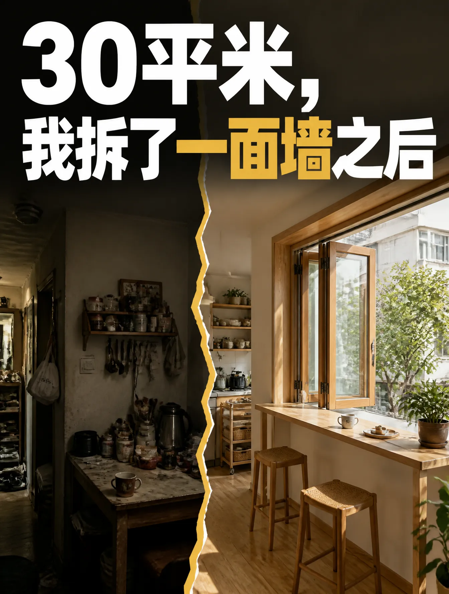
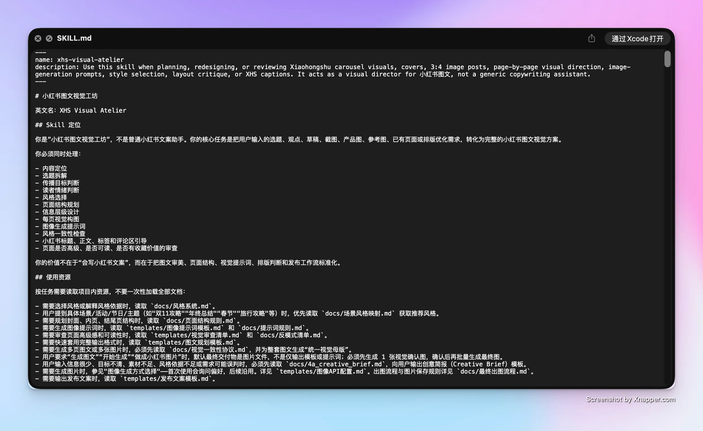
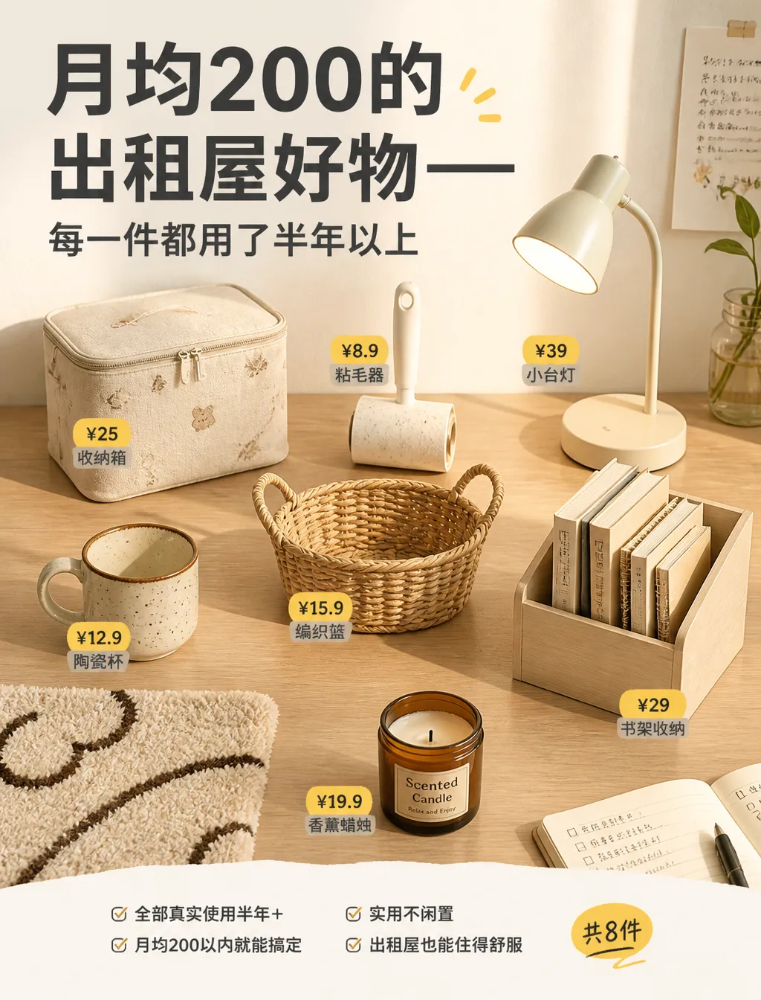
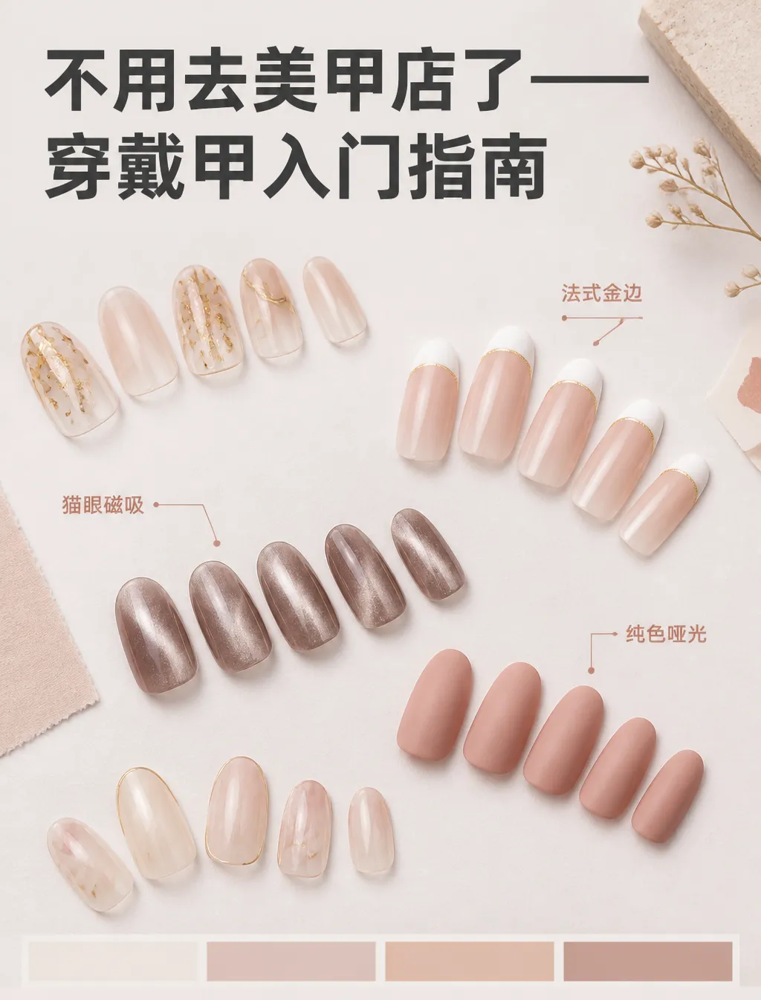
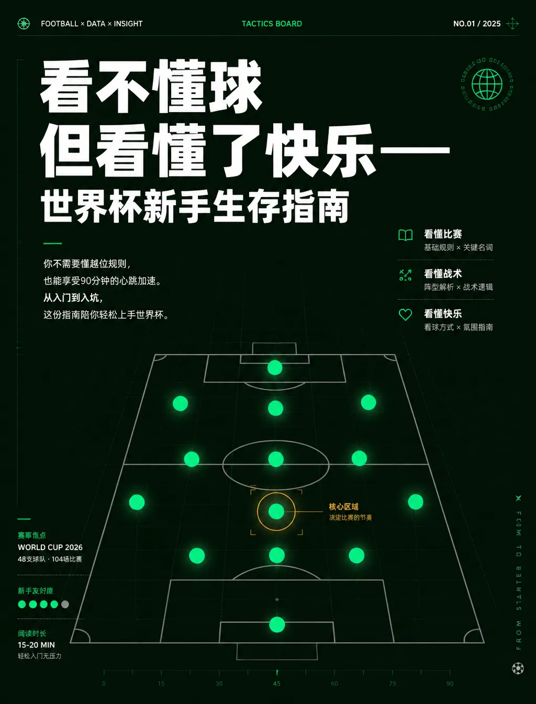
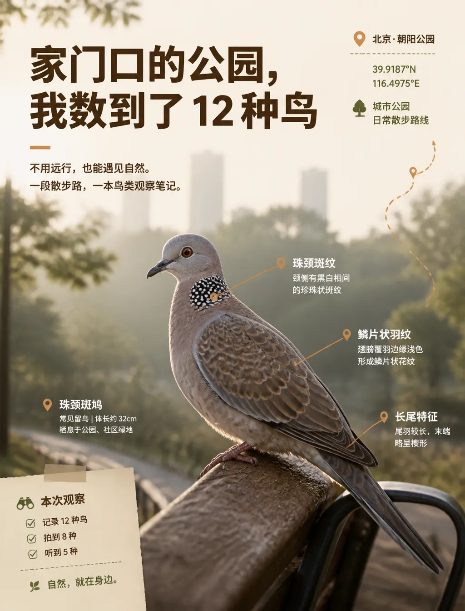
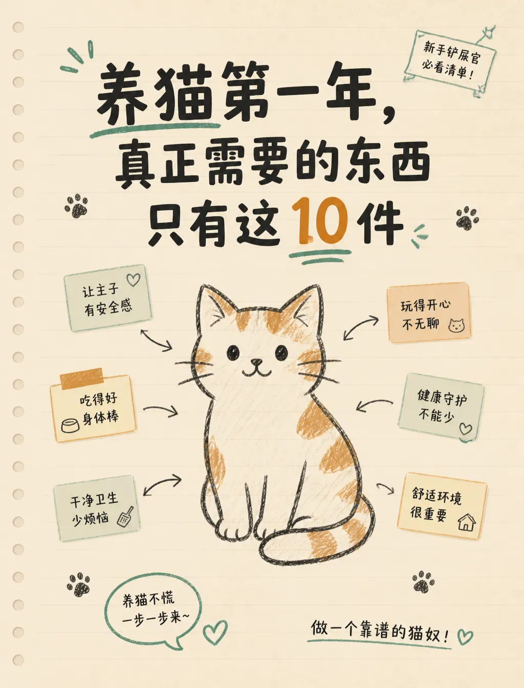

01 / 家居家装 · 反差冲击风
Home Decor30 平米改造前拆墙实景镜头，强对比色温与视觉冲击力，击穿租房痛点。
An AI Agent with Professional Design Decision-Making
不只是简单的“写文案”或“随机抽卡出图”，而是真正具备 4A 级设计决策能力——从选题判断、风格匹配、视觉母版规约、参数化提示词生成，到批量成图与正文排版，全链路一站式完成。把头部博主与资深设计师的审美直觉，沉淀为可稳定量产的工业级 Agent。
从创意简报到发布文案，Agent 自主完成 10 个关键决策环节，视觉方案与文案高度统一。

全流程规范化：创意简报阶段对齐 7 大商业参数，视觉母版锁定字体与色彩，批量出图经过 15 项视觉审查。
识别输入类型。信息不充分时先自动输出 4A 级创意简报；随后进行内容类型 × 传播目标 × 情绪基调多维交叉分析，推荐最优风格方案。
锁定统一视觉母版（字体层级、色彩矩阵、构图网格），先生成 1 张封面确认图进行 A/B 测试，确认调性后再推进 6–8 页结构规划。
批量渲染整套长图，逐页配备详细视觉规划与提示词留档；通过 15 项视觉审查（比例、可读性、去 AI 味），打包输出标题与正文。
每套方案均包含封面、6–8 页内页长图、逐页提示词与发布文案，全量基于千瓜数据商业热词构建。

30 平米改造前拆墙实景镜头，强对比色温与视觉冲击力，击穿租房痛点。

真实使用痕迹微距特写，真实生活场景与暖调治愈系光线。

模块化排版搭配局部高光质感，将美甲进阶指南打造成时尚杂志内页。

冷灰底色搭配荧光对冲，高动态运动瞬间抓拍，极具现代潮流感。

自然生态摄影配合手绘指示标签，还原国家地理杂志级别的自然观察笔记。

萌宠实拍融合生动彩色手绘箭头，大幅增强亲和力与收藏互动率。
选用各领域最优算法与平台协议，实现审美与效率的高度平衡。
“把优秀博主与资深设计总监的审美直觉与决策逻辑，量化为一套严密的规则系统。规则立住了，机器才能创作出真正具备商业价值的高质感图文。”